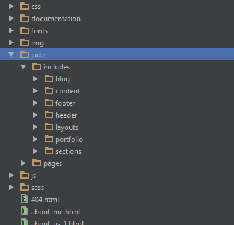
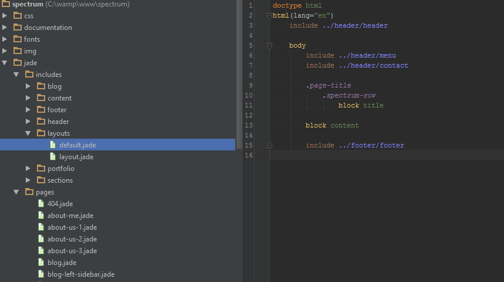
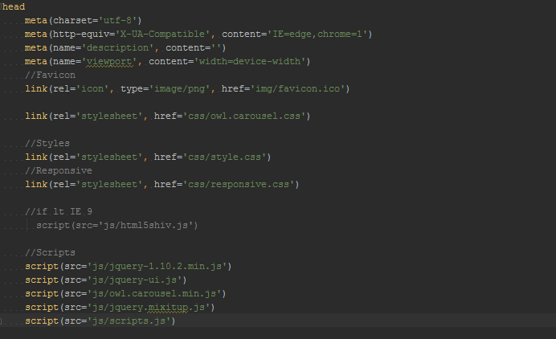
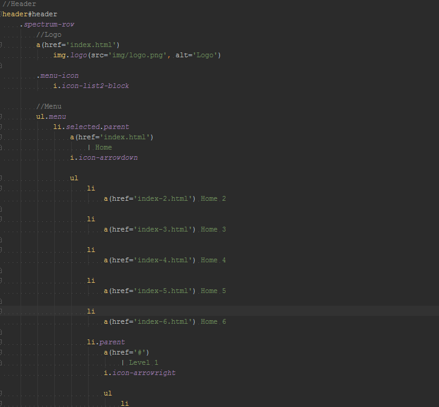
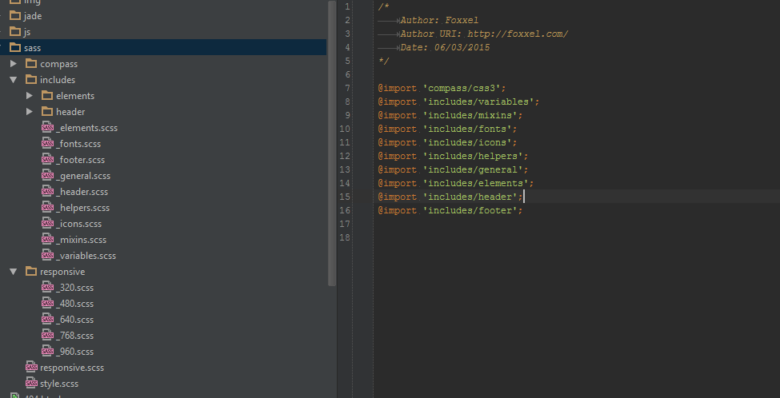
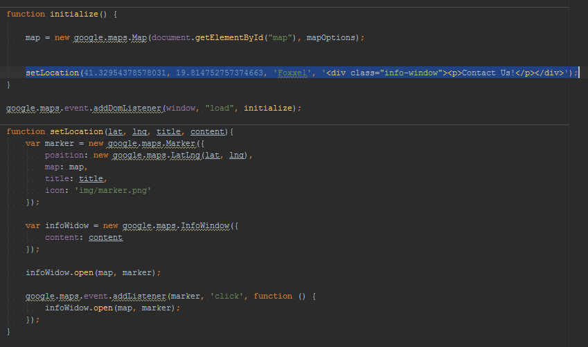

Created: 6/3/2015
By: Foxxel
Email: contact@foxxel.com
Thank you for purchasing my theme. If you have any questions that are beyond the scope of this help file, please feel free to email via my user page contact form here. Thanks so much!
This template uses Jade to generate the main html files and Sass to generate the css files. The jade files are included in the jade directory and they are structured like below:
All pares are located in the jade/pages directory.They use the 2 main layouts in jade/includes/layouts directory.
In jade/includes/header/header.jade are included the css and javascript files.
In jade/includes/header/menu.jade is the header and menu of the template.The menu must contain the .menu class. If the menu item contains sub-items the parent li tag should have the .parent class and must contain i.icon-facebook-block.icon icon in order to display it on the responsive version.
Each section should have a <section> tag followed by a div with the class .spectrum-row
This theme uses the power of sass and compass to generate the css files needed.There are 2 main scss files style.scss and responsive.scss.Each file includes the files that he needs in a very structured way that makes it easy to modify styles if needed.
The main javascript file is the file scripts.js which uses contains all the javascript used on each page.
The file map.js is included in the contact page in which you can display a map.There is a predefined function setLocation in which you can place a marker on the map.
Fonts used
Once again, thank you so much for purchasing this theme. As I said at the beginning, I'd be glad to help you if you have any questions relating to this theme. No guarantees, but I'll do my best to assist. If you have a more general question relating to the themes on ThemeForest, you might consider visiting the forums and asking your question in the "Item Discussion" section.
Foxxel